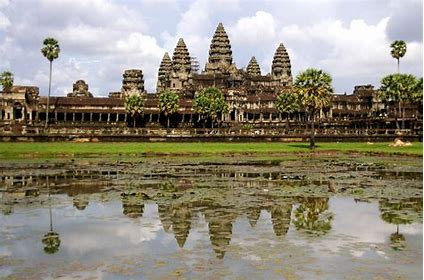
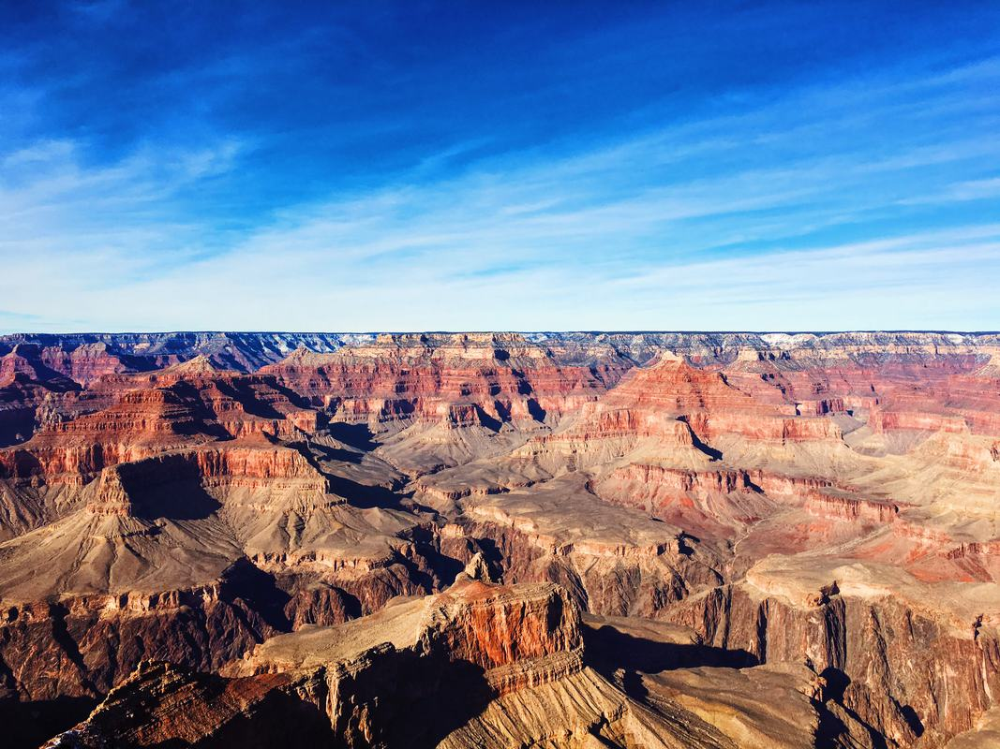

世界遺産誕生の歴史
1960年代：UNESCOがヌビア遺跡(エジプト)を保存するキャンペーンを行う。
1972年：第17回UNESCO総会にて、「世界の文化遺産及び自然遺産の保護に関する条約(世界遺産条約)」が採択
→2022年5月現在、世界遺産条約の締結国は194か国
"世界遺産は、私たち一人ひとりが守り伝えていくべき人類共通の遺産"
世界遺産リスト
世界遺産は顕著な普遍的価値を有する「有形の不動産」を対称とし、3つの種類がある
| 文化遺産 | 記念物、建築物群、遺跡、文化的景観など |
|---|---|
| 自然遺産 | 地形や地質、生態系、絶滅の恐れのある動植物の生息・生育地など |
| 複合遺産 | 文化遺産と自然遺産の両方の価値を兼ね備えているもの |
1. 文化遺産の例
- アンコール
- 
- 登録年：1992年
- 国：カンボジア王国
2. 自然遺産の例
- グランド・キャニオン国立公園
- 
- 登録年：1979年
- 国：アメリカ合衆国
3. 複合遺産の例
- マチュピチュの歴史保護区

- 登録年：1983年
- 国：ペルー共和国
世界遺産がもたらす社会的効果
「世界遺産に登録されると、世界中から多くの観光客が訪れるため、その周辺地域では大きな経済効果が見込まれる。」、そう思っている人が大多数であると考えられる。
そこで、実際にどうなのか。1996年に登録された「原爆ドーム」と2000年に登録された「琉球王国のグスク及び関連遺産群」の観光客数の推移を比較して考えてみる。以下のグラフでは、横軸を西暦(年)、縦軸を観光客数(千人)とする。
図1. 「琉球王国のグスク及び関連遺産群」と「原爆ドーム」の観光客数の推移
以上のグラフから分かるように、「琉球王国のグスク及び関連遺産群」では2000年の世界遺産登録以降、観光客数が増加傾向にあるのに対して、「原爆ドーム」では、1996年の登録以降、観光客数が減少傾向にあると見ることができる。
このことから、世界遺産に登録されることは、必ずしも観光客数の増加に結びつくとは限らず、経済効果が見込まれるとは限らない。そもそも、世界遺産とは"私たち一人ひとりが守り伝えていくべき人類共通の遺産"と認識されているように、経済効果を目的とするのではなく、人類共通の重要な遺産として残し続けていくという考えのもと扱っていくことが求められるのではないか、と考える。
参考文献
- 公益財団法人 日本ユネスコ協会連盟 「世界遺産について」
- https://www.unesco.or.jp/activities/isan/about-worldheritage/
- 外務省(2022) 「国際機関を通じた協力」
- https://www.mofa.go.jp/mofaj/gaiko/culture/kyoryoku/unesco/isan/world/isan_1.html
- 内閣府(2005) 「世界遺産の観光客数」
- https://www5.cao.go.jp/j-j/cr/cr05/chr05_1-01.html